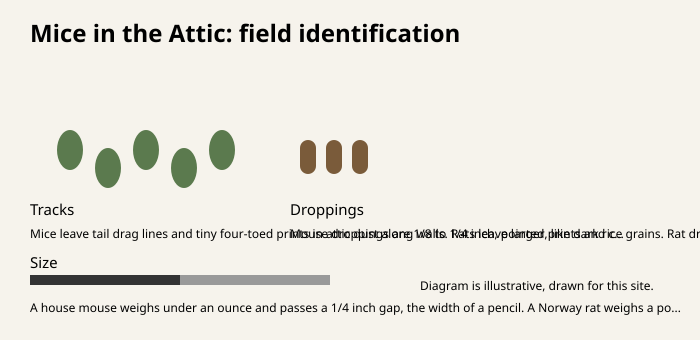

Animal guide - upstate New York
Mice in the Attic Removal in Upstate NY
This page is about mice and rats as attic invaders, not general pest control. The scratching along one fixed path at night, the droppings in the insulation, the smell in a warm wall: that is a building problem with a building solution. Traps and poison treat the population for a month. Sealing the house at the quarter-inch standard ends it. This page covers identification, the mouse and rat difference, health facts, exclusion method, and costs.
What are the signs of a mice in the attic problem?
- Light scratching and scurrying at night that travels along the same fixed paths
- Tiny rice-sized droppings along attic edges, in insulation and near stored items
- Gnaw marks on wood, stored boxes and food packaging, with fine shavings
- Grease rub marks along beams and pipes where bodies pass nightly
- Nests of shredded insulation, paper and fabric in quiet attic corners
- A stale, musky odour from wall voids, stronger in warm weather


Mice leave tail drag lines and tiny four-toed prints in attic dust along walls. Rats leave larger prints and clear runways through insulation. Mouse droppings are 1/8 to 1/4 inch, pointed, like dark rice grains. Rat droppings are 1/2 to 3/4 inch, blunt. Size alone separates them. A house mouse weighs under an ounce and passes a 1/4 inch gap, the width of a pencil. A Norway rat weighs a pound and needs about 1/2 inch.
What damage do mice do inside a home?
Mice damage a home by volume and persistence. They shred insulation into nests, tunnel through it until its insulating value drops, soil it steadily with urine along their runs, and gnaw wood, plastic and wire insulation as a matter of routine. Rats add real excavation: Norway rats burrow under slabs and into crawl spaces. The wire issue mirrors squirrels, constant gnawing on whatever is in reach, and stored belongings in an infested attic, clothing, papers, holiday decorations, come out contaminated and chewed. The contamination, more than any single hole, is the cost driver.
How do mice behave through the New York year?
House mice live their whole lives within a few yards of their nest if food allows, breed year-round indoors, and a pair in autumn is a colony by spring. Their runs are fixed and learnable: along walls, pipes and wires, which is why sounds repeat along the same paths nightly. Rats are warier, neophobic about new objects including traps, and travel further, from burrows outside to food inside. Both push indoors hard from October, when the first freezes cut outdoor food and shelter, and upstate New York winters make that push long and determined.
The rodent year in upstate New York pivots on October. First frost triggers the entry push, and calls climb from October through March as colonies settle into warm attics for winter. Spring brings breeding and, in May, the discovery season, when homeowners open attics and find a winter's worth of evidence. Summer is the best sealing season: access is easy, colonies are at their smallest indoors, and a house sealed in July stays sealed into the push. Winter work focuses on interior runs and cleanup once exclusion is in place.

Are mice a health risk to my family or pets?
Rodent droppings and urine deserve respect without panic. The risks in New York attics are leptospirosis from urine-contaminated material, salmonella around stored food, and allergens from droppings and dander that build up in insulation above bedrooms. Hantavirus is associated mainly with deer mice in specific settings and is rare in the Northeast, but the cleanup rule is the same regardless: never sweep or vacuum dry droppings, wet them with disinfectant, wear a respirator, and bag waste. Heavy attic contamination is professional cleanup work, full stop.
What does New York law say about mice in the attic removal?
Mice and rats are not protected wildlife, and no DEC licence is needed to trap them on your own property, but the professional exclusion standard is still the measure here, and operators doing attic work in homes operate insured and follow the same cleanup safety rules as for any contamination. One legal point does bind homeowners directly: rodenticide use is regulated, products are labelled for specific placements, and scattering poison in an attic is both an off-label use and the surest route to a carcass in a wall void. The law aside, sealing beats poison on results alone.
Can I handle mice in the attic removal myself?
DIY trapping tells you whether you have mice; it does not close a house. Snap traps along runs, baited and unset for rats until they accept them, are a fair homeowner tool, and poison is not: poisoned rodents die in walls, and owls, hawks and pets eat poisoned rodents. The DIY that actually matters is sealing, and it is exacting, quarter-inch gaps at pipe penetrations, foundation joints, door sweeps and roofline metal, in copper mesh and steel, not foam, which mice chew for nesting material. Most homeowners underestimate the gap count by an order of magnitude.
One last thing on choosing help. Get the inspection findings in writing, with photographs of each entry point, and get removal, sealing and cleanup as separate lines on the estimate. Ask what material closes each hole, because foam and caulk alone are not exclusion. And ask the season question out loud: if the timing is wrong for this species, an honest operator will tell you to wait, and offer the inspection and quote now so the work is ready the week the window opens.
How does humane mice in the attic removal work, step by step?

Survey the whole perimeter at the quarter-inch standard
The inspection walks the foundation, roofline and every pipe, wire and vent penetration with one question: can a pencil pass here? Mice need 1/4 inch, rats about 1/2. Every gap is logged, along with droppings evidence that separates mouse work from rat work.
Remove the animals already inside
With the entry list known, trapping runs along the fixed runs the survey found, snap traps for mice and a more patient programme for trap-shy rats. Removal happens alongside sealing, in the right order, so no animal is sealed in to die in a wall.
Seal with materials rodents cannot chew
Gaps are closed with copper or steel mesh, backer rod, sealant and metal flashing as each spot demands. Expanding foam alone is never the finish, since mice harvest it. Door sweeps, vent screens and pipe collars complete the perimeter.
Clean up droppings and restore the attic
Droppings and nesting are removed wet, with respirators, contaminated insulation is taken out where soiling is heavy, and the space is disinfected. Fresh insulation restores the R-value the colony destroyed, and the attic is left inspectable so any future sign is obvious at a glance.
In the local data
The small-mammal records behind this page hold 139 research-grade iNaturalist observations across the mice, rats and voles recorded in the ten town areas: eastern meadow vole (58), white-footed mouse (30), brown rat (20), eastern deer mouse (18), house mouse (7) and woodland vole (6). At least one member of that group was recorded in all 10 of the 10 town areas.
Data: iNaturalist, 25 km radius per town, fetched November 2026.
How much does mice in the attic removal cost?
| Service | Typical range | Notes |
|---|---|---|
| Inspection and entry-point survey | $150-$300 | Often credited toward the work when you proceed. |
| Single-animal humane removal | $300-$600 | One animal, one entry point, straightforward access. |
| Bat exclusion, full home | $800-$2,500 | Colony work: one-way valves, full seal, guano check. |
| Attic cleanup and disinfection | Quoted after inspection | Depends on droppings volume and insulation condition. |
Rodent exclusion prices by the gap count and the cleanup, not by the animal. A tight house with a handful of penetrations is a modest job. An older home with dozens of gaps, rat burrowing and heavy insulation contamination is quoted in stages, survey first, so each stage has its own number.
These are typical market ranges for upstate New York, published so you can sanity-check any quote. They are not a quote for your home: access, entry count, young in the den and cleanup volume move the real number, which is why the inspection comes first and the estimate is written.
Mice removal in your town
The method on this page is state-wide, but the animal pressure, housing stock and season are local. These town pages combine the mice in the attic method with each town's housing, waterways and cost notes, including sub-services like attic, chimney and under-deck work, babies, damage repair and emergencies.
Ithaca Binghamton Poughkeepsie Kingston Newburgh Utica Saratoga Springs Watertown Auburn Elmira
Mice in the Attic removal questions, answered
I only saw one mouse. Do I really need to worry?
One mouse seen usually means a run you have not found yet. Mice are nocturnal, shy and live within yards of their nest, so a sighting in living space implies an established route between nest and food. Droppings tell the truth: check the attic edges and behind appliances. A few pellets along one run may be a scout. Pellets in several places, plus nesting material, means a colony, and colonies grow fast indoors through winter.
What is the best sealant for mouse entry points?
The honest answer is that sealant alone is not the material. Mice chew foam and caulk, sometimes within days. The professional standard is a chew-proof core, copper mesh or steel wool packed tight, or hardware cloth and metal flashing on larger gaps, finished with sealant for weatherproofing. At pipe penetrations, metal escutcheon plates close the ring mice favour. Think of sealant as the paint, not the wall: it finishes a barrier made of metal.
When is the best time of year to seal entry points?
Late summer into early fall is ideal in upstate New York, because the house gets closed before the October entry push, access is easy and colonies indoors are at their smallest. Sealing can be done in any season, though: the order matters more than the month. Remove the animals on the inside as the perimeter closes, so nothing is trapped in a wall, and winter jobs simply run the trapping stage a little longer.
Can I just use store-bought traps myself?
You can, and traps are a reasonable first response for a small, new problem. Set snap traps perpendicular to walls along the runs, in the attic and behind appliances, and check them daily. What traps cannot do is stop entry: if the gaps stay open, you are harvesting a colony the neighbourhood keeps restocking. If droppings keep appearing after a fortnight of trapping, the problem is the perimeter, and that is exclusion work.
Will mice come back after removal and sealing?
Not through the same house, if the sealing was done at the quarter-inch standard with chew-proof materials. Returns almost always trace to a missed penetration, a garage door sweep, a new utility hole cut by another trade, or foam-only patches that were chewed through. That is why the survey logs every gap and the sealing uses metal. A follow-up check after the first cold snap confirms the perimeter before winter does its own testing.
How do mice get into the attic in the first place?
By routes most homeowners never look at: up the inside of corner channels in vinyl siding, along pipes and wires through the basement and wall voids, through gaps where the roofline meets the wall, and via branches and vines against the house. Mice climb rough surfaces well. From any wall void, the attic is one stud bay away. The perimeter survey follows exactly these routes, which is why it finds gaps that years of living in the house never revealed.
Do you use poison for mice in the attic or around the home?
No. Poison is not part of humane mice in the attic work on this site, and for good reason. A poisoned animal usually dies somewhere unreachable, in a wall, a flue or under a floor, and the entry point stays open for the next animal anyway. Eviction, one-way doors where they fit, live capture where they do not, and then sealing solves the problem at the structure, which is where it actually lives.
Will you seal the entry points, or just remove the animal?
Sealing is the point of the job, and any quote that only covers removal is half a quote. The process here runs in order: inspect and map every entry, evict or capture the mice, confirm the space is empty, then close each opening with materials the animal cannot chew, dig or pry through. Removal without exclusion is a short rental of an empty attic, and the next tenant rarely waits a full season to move in.
Are wildlife removal operators licensed and insured in New York?
They should be, and you can check before anyone climbs your roof. Nuisance Wildlife Control Operators in New York work under a NYS DEC licence, carry insurance for roof and attic work, and should give you the licence details on request. The checklist is simple: licence, insurance, a written estimate with line items, and a method that starts with inspection and ends with sealing. An operator who cannot produce the first two has not earned the job.
How fast can a wildlife technician get to my home?
Response time depends on where in upstate New York you are and what the mice in the attic is doing. An animal in the living space, a chimney or a wall void is treated as urgent and usually gets a same-day or next-day response across the towns this site covers. Attic evictions and barrier work are booked as inspections first, normally within a few days, and the written quote follows the inspection, not a guess over the phone.
How much does mice in the attic removal cost in upstate New York?
The canonical bands on this site apply to every town: inspections run $150 to $300 and are often credited toward the work, a single-animal humane removal is typically $300 to $600, full bat exclusion runs $800 to $2,500, and attic cleanup is quoted after inspection because it depends on what the animals left behind. Rodent exclusion prices by the gap count and the cleanup, not by the animal. A tight house with a handful of penetrations is a modest job. An older home with dozens of gaps, rat burrowing and heavy insulation contamination is quoted in stages, survey first, so each stage has its own number.